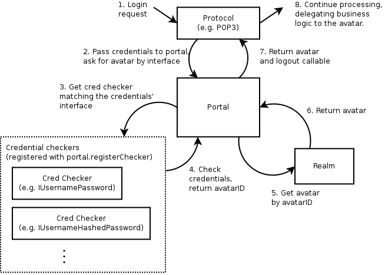

Cred: Pluggable Authentication
Goals
Cred is a pluggable authentication system for servers. It allows any number of network protocols to connect and authenticate to a system, and communicate to those aspects of the system which are meaningful to the specific protocol. For example, Twisted’s POP3 support passes a “username and password” set of credentials to get back a mailbox for the specified email account. IMAP does the same, but retrieves a slightly different view of the same mailbox, enabling those features specific to IMAP which are not available in other mail protocols.
Cred is designed to allow both the backend implementation of the business logic - called the avatar - and the authentication database - called the credential checker - to be decided during deployment. For example, the same POP3 server should be able to authenticate against the local UNIX password database or an LDAP server without having to know anything about how or where mail is stored.
To sketch out how this works - a “Realm” corresponds to an application
domain and is in charge of avatars, which are network-accessible business logic
objects. To connect this to an authentication database, a top-level object
called a Portal stores a
realm, and a number of credential checkers. Something that wishes to log in,
such as a Protocol ,
stores a reference to the portal. Login consists of passing credentials and a
request interface (e.g. POP3’s IMailboxPOP3 ) to the portal. The portal passes
the credentials to the appropriate credential checker, which returns an avatar
ID. The ID is passed to the realm, which returns the appropriate avatar. For a
Portal that has a realm that creates mailbox objects and a credential checker
that checks /etc/passwd, login consists of passing in a username/password and
the IMailboxPOP3 interface to the portal. The portal passes this to the /etc/passwd
credential checker, gets back a avatar ID corresponding to an email account,
passes that to the realm and gets back a mailbox object for that email
account.
Putting all this together, here’s how a login request will typically be processed:
Cred objects
The Portal
This is the core of login, the point of integration between all the objects
in the cred system. There is one
concrete implementation of Portal, and no interface - it does a very
simple task. A Portal
associates one (1) Realm with a collection of
CredentialChecker instances. (More on those later.)
If you are writing a protocol that needs to authenticate against something, you will need a reference to a Portal, and to nothing else. This has only 2 methods -
login(credentials, mind, *interfaces)The docstring is quite expansive (see
twisted.cred.portal), but in brief, this is what you call when you need to call in order to connect a user to the system. Typically you only pass in one interface, and the mind isNone. The interfaces are the possible interfaces the returned avatar is expected to implement, in order of preference. The result is a deferred which fires a tuple of:interface the avatar implements (which was one of the interfaces passed in the
*interfacestuple)an object that implements that interface (an avatar)
logout, a 0-argument callable which disconnects the connection that was established by this call to login
The logout method has to be called when the avatar is logged out. For POP3 this means when the protocol is disconnected or logged out, etc..
registerChecker(checker, *credentialInterfaces)which adds a CredentialChecker to the portal. The optional list of interfaces are interfaces of credentials that the checker is able to check.
The CredentialChecker
This is an object implementing ICredentialsChecker which resolves some
credentials to an avatar ID.
Whether the credentials are stored in an in-memory data structure, an
Apache-style htaccess file, a UNIX password database, an SSH key database,
or any other form, an implementation of ICredentialsChecker is
how this data is connected to cred.
A credential checker stipulates some requirements of the credentials it can check by specifying a credentialInterfaces attribute, which is a list of interfaces. Credentials passed to its requestAvatarId method must implement one of those interfaces.
For the most part, these things will just check usernames and passwords and produce the username as the result, but hopefully we will be seeing some public-key, challenge-response, and certificate based credential checker mechanisms soon.
A credential checker should raise an error if it cannot authenticate
the user, and return twisted.cred.checkers.ANONYMOUS
for anonymous access.
The Credentials
Oddly enough, this represents some credentials that the user presents. Usually this will just be a small static blob of data, but in some cases it will actually be an object connected to a network protocol. For example, a username/password pair is static, but a challenge/response server is an active state-machine that will require several method calls in order to determine a result.
Twisted comes with a number of credentials interfaces and implementations
in the twisted.cred.credentials module,
such as IUsernamePassword
and IUsernameHashedPassword .
The Realm
A realm is an interface which connects your universe of “business objects” to the authentication system.
IRealm is another one-method interface:
requestAvatar(avatarId, mind, *interfaces)This method will typically be called from ‘Portal.login’. The avatarId is the one returned by a CredentialChecker.
Note
Note that
avatarIdmust always be a string. In particular, do not use unicode strings. If internationalized support is needed, it is recommended to use UTF-8, and take care of decoding in the realm.The important thing to realize about this method is that if it is being called, the user has already authenticated . Therefore, if possible, the Realm should create a new user if one does not already exist whenever possible. Of course, sometimes this will be impossible without more information, and that is the case that the interfaces argument is for.
Since requestAvatar should be called from a Deferred callback, it may return a Deferred or a synchronous result.
The Avatar
An avatar is a business logic object for a specific user. For POP3, it’s a mailbox, for a first-person-shooter it’s the object that interacts with the game, the actor as it were. Avatars are specific to an application, and each avatar represents a single “user” .
The Mind
As mentioned before, the mind is usually None , so you can skip this
bit if you want.
Masters of Perspective Broker already know this object as the ill-named “client object” . There is no “mind” class, or even interface, but it is an object which serves an important role - any notifications which are to be relayed to an authenticated client are passed through a ‘mind’. In addition, it allows passing more information to the realm during login in addition to the avatar ID.
The name may seem rather unusual, but considering that a Mind is representative of the entity on the “other end” of a network connection that is both receiving updates and issuing commands, I believe it is appropriate.
Although many protocols will not use this, it serves an important role. It is provided as an argument both to the Portal and to the Realm, although a CredentialChecker should interact with a client program exclusively through a Credentials instance.
Unlike the original Perspective Broker “client object” , a Mind’s implementation is most often dictated by the protocol that is connecting rather than the Realm. A Realm which requires a particular interface to issue notifications will need to wrap the Protocol’s mind implementation with an adapter in order to get one that conforms to its expected interface - however, Perspective Broker will likely continue to use the model where the client object has a pre-specified remote interface.
(If you don’t quite understand this, it’s fine. It’s hard to explain, and it’s not used in simple usages of cred, so feel free to pass None until you find yourself requiring something like this.)
Responsibilities
Server protocol implementation
The protocol implementor should define the interface the avatar should implement, and design the protocol to have a portal attached. When a user logs in using the protocol, a credential object is created, passed to the portal, and an avatar with the appropriate interface is requested. When the user logs out or the protocol is disconnected, the avatar should be logged out.
The protocol designer should not hardcode how users are authenticated or the realm implemented. For example, a POP3 protocol implementation would require a portal whose realm returns avatars implementing IMailbox and whose credential checker accepts username/password credentials, but that is all. Here’s a sketch of how the code might look - note that USER and PASS are the protocol commands used to login, and the DELE command can only be used after you are logged in:
# Copyright (c) Twisted Matrix Laboratories.
# See LICENSE for details.
from zope.interface import Interface
from twisted.cred import credentials, error
from twisted.internet import defer
from twisted.protocols import basic
from twisted.python import log
class IMailbox(Interface):
"""
Interface specification for mailbox.
"""
def deleteMessage(index):
pass
class POP3(basic.LineReceiver):
# ...
def __init__(self, portal):
self.portal = portal
def do_DELE(self, i):
# uses self.mbox, which is set after login
i = int(i) - 1
self.mbox.deleteMessage(i)
self.successResponse()
def do_USER(self, user):
self._userIs = user
self.successResponse("USER accepted, send PASS")
def do_PASS(self, password):
if self._userIs is None:
self.failResponse("USER required before PASS")
return
user = self._userIs
self._userIs = None
d = defer.maybeDeferred(self.authenticateUserPASS, user, password)
d.addCallback(self._cbMailbox, user)
def authenticateUserPASS(self, user, password):
if self.portal is not None:
return self.portal.login(
credentials.UsernamePassword(user, password), None, IMailbox
)
raise error.UnauthorizedLogin()
def _cbMailbox(self, ial, user):
interface, avatar, logout = ial
if interface is not IMailbox:
self.failResponse("Authentication failed")
log.err("_cbMailbox() called with an interface other than IMailbox")
return
self.mbox = avatar
self._onLogout = logout
self.successResponse("Authentication succeeded")
log.msg("Authenticated login for " + user)
Application implementation
The application developer can implement realms and credential checkers. For example, they might implement a realm that returns IMailbox implementing avatars, using MySQL for storage, or perhaps a credential checker that uses LDAP for authentication. In the following example, the Realm for a simple remote object service (using Twisted’s Perspective Broker protocol) is implemented:
from zope.interface import implementer
from twisted.spread import pb
from twisted.cred.portal import IRealm
class SimplePerspective(pb.Avatar):
def perspective_echo(self, text):
print('echoing',text)
return text
def logout(self):
print(self, "logged out")
@implementer(IRealm)
class SimpleRealm:
def requestAvatar(self, avatarId, mind, *interfaces):
if pb.IPerspective in interfaces:
avatar = SimplePerspective()
return pb.IPerspective, avatar, avatar.logout
else:
raise NotImplementedError("no interface")
Deployment
Deployment involves tying together a protocol, an appropriate realm and a credential checker. For example, a POP3 server can be constructed by attaching to it a portal that wraps the MySQL-based realm and an /etc/passwd credential checker, or perhaps the LDAP credential checker if that is more useful. The following example shows how the SimpleRealm in the previous example is deployed using an in-memory credential checker:
from twisted.spread import pb
from twisted.internet import reactor
from twisted.cred.portal import Portal
from twisted.cred.checkers import InMemoryUsernamePasswordDatabaseDontUse
portal = Portal(SimpleRealm())
checker = InMemoryUsernamePasswordDatabaseDontUse()
checker.addUser("guest", "password")
portal.registerChecker(checker)
reactor.listenTCP(9986, pb.PBServerFactory(portal))
reactor.run()
Cred plugins
Authentication with cred plugins
Cred offers a plugin architecture for authentication methods. The primary API for this architecture is the command-line; the plugins are meant to be specified by the end-user when deploying a TAP (twistd plugin).
For more information on writing a twistd plugin and using cred plugins for your application, please refer to the Writing a twistd plugin document.
Building a cred plugin
To build a plugin for cred, you should first define an authType , a short one-word string that defines
your plugin to the command-line. Once you have this, the convention is
to create a file named myapp_plugins.py in the twisted.plugins module path.
Below is an example file structure for an application that defines such a plugin:
MyApplication/
setup.py
myapp/
__init__.py
cred.py
server.py
twisted/
plugins/
myapp_plugins.py
Once you have created this structure within your application, you can
create the code for your cred plugin by building a factory class which
implements ICheckerFactory .
These factory classes should not consist of a tremendous amount of
code. Most of the real application logic should reside in the cred
checker itself. (For help on building those, scroll up.)
The core purpose of the CheckerFactory is to translate an argstring , which is passed on the command line,
into a suitable set of initialization parameters for a Checker
class. In most cases this should be little more than constructing a
dictionary or a tuple of arguments, then passing them along to a new
checker instance.
from zope.interface import implementer
from twisted import plugin
from twisted.cred.strcred import ICheckerFactory
from myapp.cred import SpecialChecker
# The class needs to implement both of these interfaces
# for the plugin system to find our factory.
@implementer(ICheckerFactory, plugin.IPlugin)
class SpecialCheckerFactory(object):
"""
A checker factory for a specialized (fictional) API.
"""
# This tells AuthOptionsMixin how to find this factory.
authType = "special"
# This is a one-line explanation of what arguments, if any,
# your particular cred plugin requires at the command-line.
argStringFormat = "A colon-separated key=value list."
# This help text can be multiple lines. It will be displayed
# when someone uses the "--help-auth-type special" command.
authHelp = """Some help text goes here ..."""
# This will be called once per command-line.
def generateChecker(self, argstring=""):
argdict = dict((x.split('=') for x in argstring.split(':')))
return SpecialChecker(**argdict)
# We need to instantiate our class for the plugin to work.
theSpecialCheckerFactory = SpecialCheckerFactory()
For more information on how your plugin can be used in your application (and by other application developers), please see the Writing a twistd plugin document.
Conclusion
After reading through this tutorial, you should be able to
Understand how the cred architecture applies to your application
Integrate your application with cred’s object model
Deploy an application that uses cred for authentication
Allow your users to use command-line authentication plugins